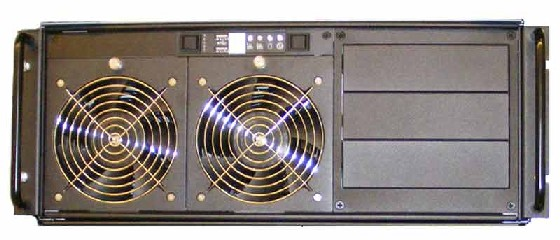
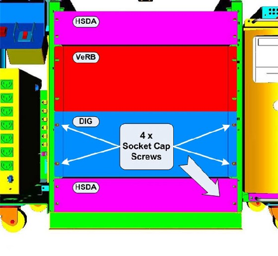
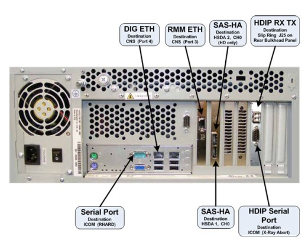
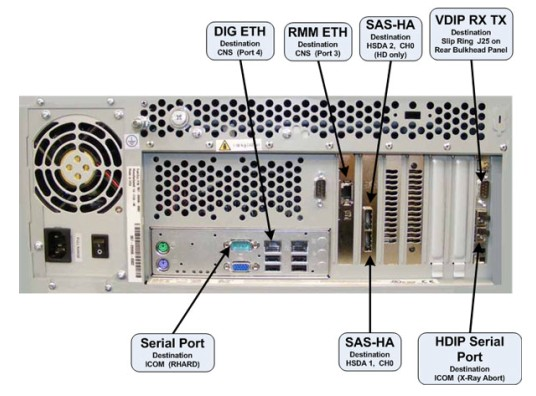

Operating Documentation
Direction 5321294, Rev# 3
GOC6 Service Methods
Operating Documentation |
| Required Persons | Preliminary Reqs | Procedure | Finalization |
|---|---|---|---|
| 1 |
This procedure describes and illustrates the steps necessary to replace the Data Acquisition & Image Generation Computer (DIG).
| Last revised: | 22 September 2008 |
Illustration 1: Data Acquisition & Image Generation Computer (DIG)

| Item | Qty | Effectivity | Part# | Manufacturer | |
|---|---|---|---|---|---|
| Standard FE Toolkit | 1 | - | - | - | |
| 4 mm Hex Key Wrench | 1 | - | - | - | |
| Item | Qty | Effectivity | Part# | Manufacturer | |
|---|---|---|---|---|---|
| DIG Computer | 1 | - | 5255299-10 for HDIG, HD | - | |
| - | - | - | 5255299-20 for VDIG, VCT | - | |
| ELECTROCUTION HAZARD | |
| HIGH VOLTAGE PRESENT | |
| USE PROPER LOCKOUT / TAGOUT PROCEDURES BEFORE REPLACING THE COMPONENTS. |
| POTENTIAL FOR INJURY TO SERVICE PERSONNEL | |
| DIG COMPUTER CAN WEIGH IN EXCESS OF 50 POUNDS. | |
| DEPENDING ON YOUR HEIGHT AND ACCESS TO EQUIPMENT REMOVAL/INSTALLATION, LIFTING ASSISTANCE MAY BE REQUIRED. USE YOUR JUDGMENT TO DETERMINE IF LIFT ASSIST OR A SECOND PERSON MAY BE REQUIRED TO ASSIST IN REMOVAL AND INSTALLATION. |
| FOLLOW ALL REQUIRED SAFETY AND PPE PROCEDURES CUSTOMARY FOR YOUR ORGANIZATION WHEN WORKING ON THIS PRODUCT. | |
| Condition | Reference | Eff |
|---|---|---|
Access to both the front and rear of the Operator Console is required. Move the console away from walls and remove obstacles in room. | - | - |
Only trained service personnel should service the GE CT Scanner. | - | - |
Select one of the following methods to power off the Operator Console:
If applications are running, click the Shut Down icon and select Shut Down.
If applications are down, open a Unix Shell using the Toolchest. Type: {ctuser@hostname} halt. Press <Enter>.
The Operator Console monitor will display a System Halted message when it is acceptable to power off the Operator Console.
Power OFF the Operator Console at the front panel switch ( Illustration 2).
Illustration 2: Console Power Switch

Perform prescribed Lockout/Tagout procedure. For added protection, disconnect the Twist-N-Lock Main Power Cable from the rear of the console.
Remove the front and rear Operator Console Covers per prescribed cover removal procedure.
Remove the cable connections at the rear of the DIG Computer chassis being replaced.
| NOTE: | Verify that all cables are labeled and clearly marked. If necessary, add a label for clarity |
Remove the power cord at the rear of the DIG Computer chassis.
Remove the four (4) 5mm socket cap screws and washers from the front of the DIG Computer chassis, holding the chassis to the Operator Console rack.
Illustration 3: DIG Computer Mounting

Slide the DIG Computer chassis forward (out the front of console) and set aside.
Refer to Equipment Service - Console.
Slide the replacement DIG Computer into the Operator Console from the front.
Replace the four (4) 5mm socket cap screws and washers to secure the DIG Computer chassis to the Operator Console rack. Torque to 4.6 N-m.
Mount the power cord to the rear of the DIG Computer chassis and verify that its power supply switch is turned to the ON position.
Replace the rear cable connection(s).
Illustration 4: HDIG Cable Connections & Destination

Illustration 5: VDIG Cable Connections & Destination

Refer to schematic for cabling details.
Refer to GOC6 Console Schematic 5212920SCH for a scalable PDF version of the schematic.
Reconnect the Twist-N-Lock Main Power Cable from rear of console and remove Lockout Tagout protection applied earlier.
Power ON the Operator Console at the console front panel switch.
Do not allow Applications to start. During boot-up, cancel Application Startup when the CT Software Auto-start pop-up window appears.
Verify that the DIG Computer has powered up and is not displaying or sounding any POST Errors.
| NOTE: | See DIG Troubleshooting procedure if any errors appear. |
In order to assure proper operation of the DIG computer it is necessary to perform System Configuration.
Do not allow Applications to start. During boot-up, cancel Application Startup when the CT Software Auto-start pop-up window appears.
Open a Terminal window and log on as Root.
Type: reconfig [Enter]
| NOTE: | No changes are required in the System, Preferences, Hardware, 阿Network settings. The procedure just needs to be executed in order for the automated scripts to run. During the reconfiguration process the DHCP Server running on the Host Computer is reconfigured to support the new DIG Computer Ethernet MAC addresses. |
| NOTE: | Until the System Configuration procedure is performed, the Linux OS bootup text will display an error message when the DIG computer attempts to mount its NFS on the Host Computer. Ignore the error message. |
After completing the System Configuration procedure, perform a complete shutdown of the Operator Console and restart the system.
Refer to System Scanning Test to confirm proper operation.
Reinstall Console Front and Rear Covers.